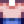

Deluxe-Dünger
Zur Navigation springen
Zur Suche springen
| Deluxe-Dünger | |
| Verbessert die Bodenqualität erheblich und erhöht damit die Chance, Qualitätskulturen anzubauen. Wird in gepflügten Boden gemischt. | |
| Information | |
| Bereich | Herstellung |
| Verkaufspreis | |
| Rezept | |
| Rezeptquelle | Geheimes Walnusszimmer von Mr. Qi ( |
| Zutaten | |
| Produziert | 5 Deluxe-Dünger pro Herstellung |
Deluxe-Dünger ist ein Dünger, der die Chance auf Qualitätsprodukte beträchtlich erhöht. Der Dünger muss auf das beschaffte Feld gegeben werden bevor ein Samen gesprossen ist. Die Nutzung von Deluxe-Dünger erlaubt eine Möglichkeit beim Ernten Nutzpflanzen mit Iridium-Qualität zu erhalten.
Deluxe-Düngerwirkt sich nur auf die Grundernte aus, was bedeutet, dass zusätzliche Produkte bei der Ernte von etwa Kartoffeln, Blaubeeren, Preiselbeeren usw. stets von regulärer Qualität sind.
Wahrscheinlichkeit für Qualitätsprodukte
| Hofarbeitslevel | % normale Qualität | % Silber-Qualität | % Gold-Qualität | % Iridium-Qualität | Durchschnittspreis |
|---|---|---|---|---|---|
| 0 | 66% | 19% | 10% | 6% | 1.15 |
| 1 | 48% | 27% | 16% | 9% | 1.24 |
| 2 | 33% | 33% | 22% | 13% | 1.32 |
| 3 | 21% | 37% | 27% | 16% | 1.39 |
| 4 | 12% | 37% | 31% | 20% | 1.44 |
| 5 | 10% | 31% | 35% | 23% | 1.49 |
| 6 | 9% | 26% | 39% | 27% | 1.52 |
| 7 | 7% | 21% | 42% | 30% | 1.56 |
| 8 | 5% | 16% | 45% | 34% | 1.60 |
| 9 | 4% | 12% | 47% | 37% | 1.63 |
| 10 | 3% | 8% | 48% | 41% | 1.67 |
| 11 | 2% | 5% | 49% | 44% | 1.70 |
| 12 | 1% | 2% | 50% | 48% | 1.73 |
| 13 | 0% | 0% | 49% | 51% | 1.76 |
Als Geschenk
| Reaktionen der Dorfbewohner
| |
|---|---|
| Gefällt nicht | |
Schneiderei
Deluxe-Dünger kann in der Spule der Nähmaschine genutzt werden, um das färbbare Hoch tailliertes Hemd herzustellen.
- Unisex Version: 
Aufträge
Deluxe-Dünger wird für keine Aufträge benötigt.
Geschichte
- 1.5: Eingeführt.